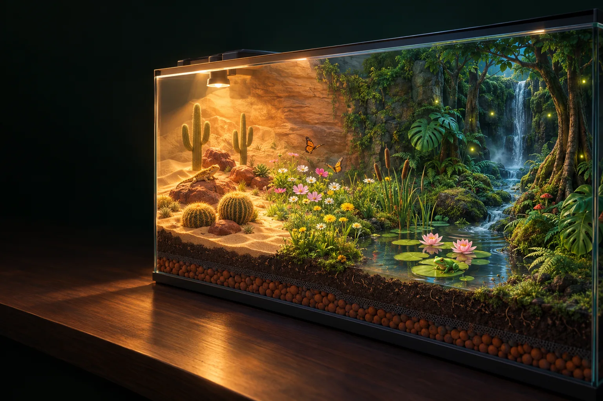
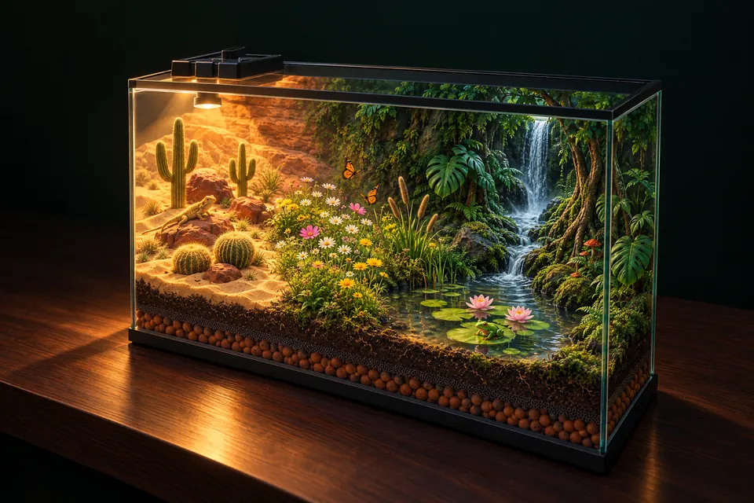
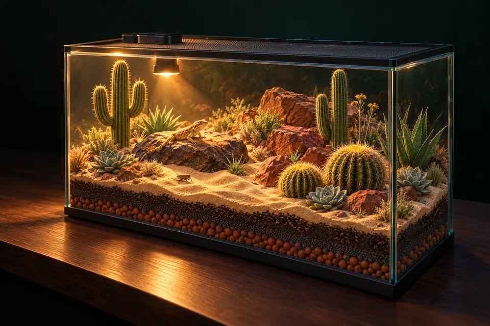
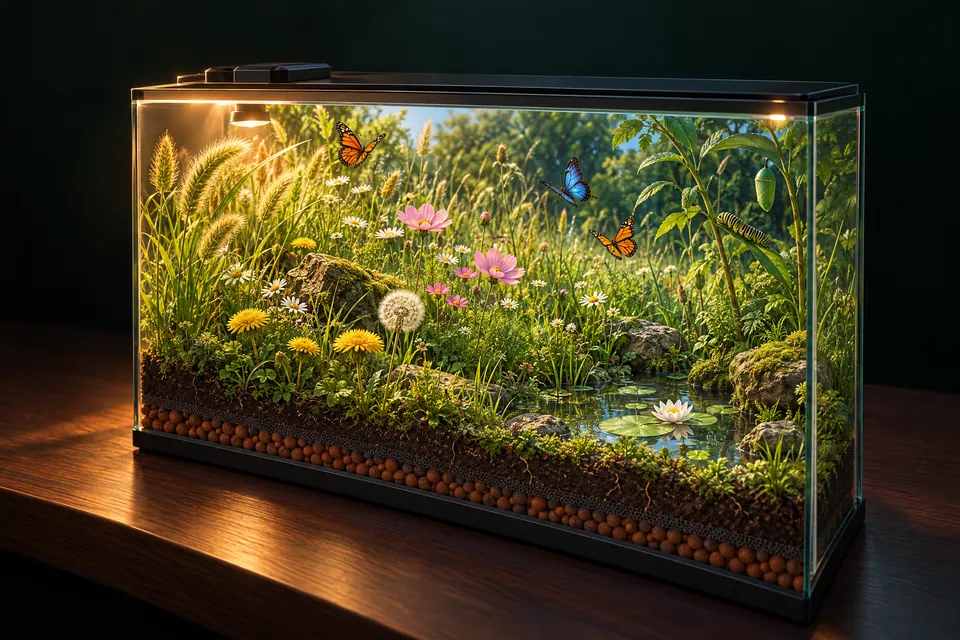
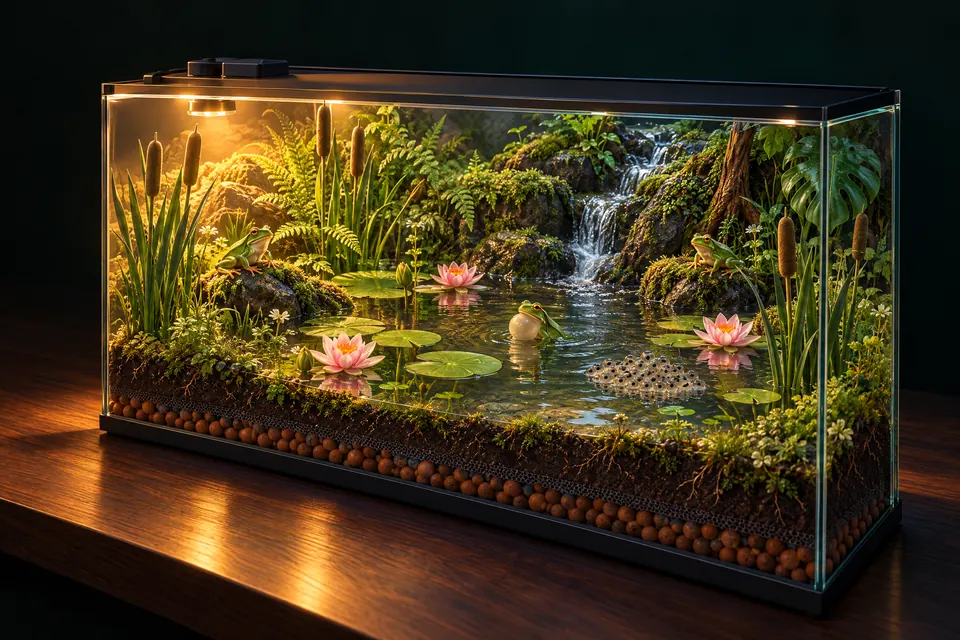
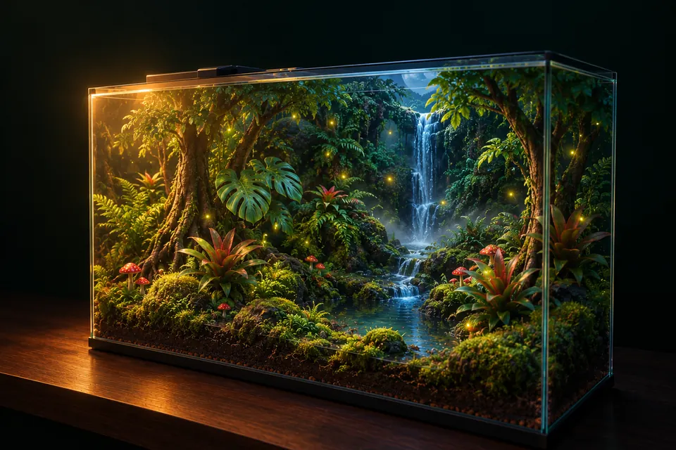
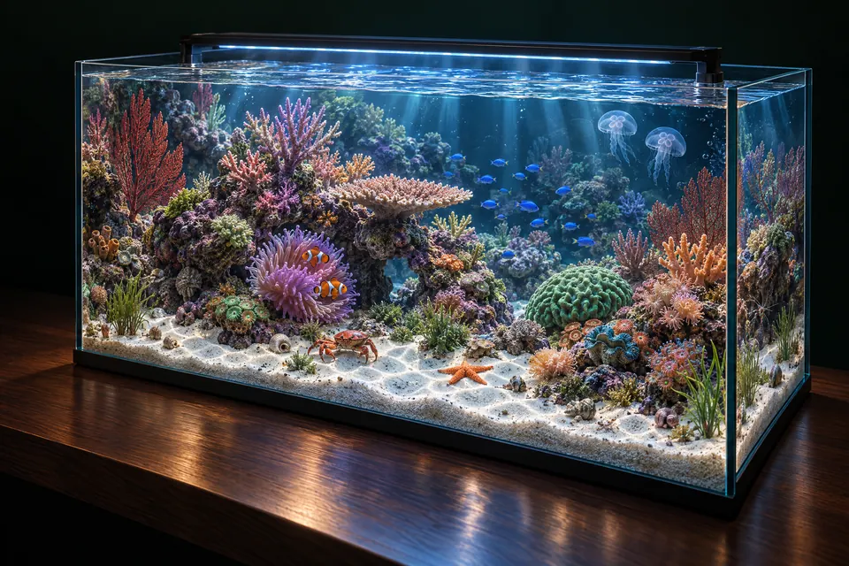
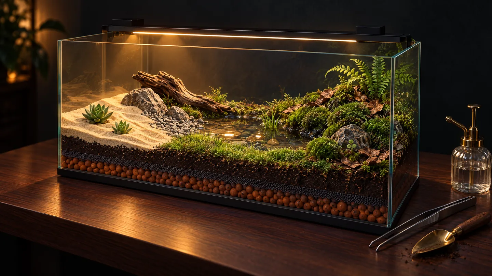

把“复制布局”得到的整段文字粘贴到下面。现在缸里的布景会被换掉。
开缸后时间开始流动，可以投放动物。之后地形和底材不能再改，布景和种植恢复正常价格。
记录你在缸里亲眼看到的每一次发现
只记录你亲眼看到的瞬间：事情发生时，主角要在画面里。趁它还在画面里按相机拍下来，可以升级为金星。整座方舟共用一本见闻录。

在一只玻璃缸里造一个会自己运转的世界。光合作用、食物链、出生与死亡，都在你眼前发生。
每只缸的进度会自动保存在这台设备上







每只缸一个存档，自动保存在这台设备的浏览器里。导出成文件可以备份，或者换设备、换浏览器后再导入。